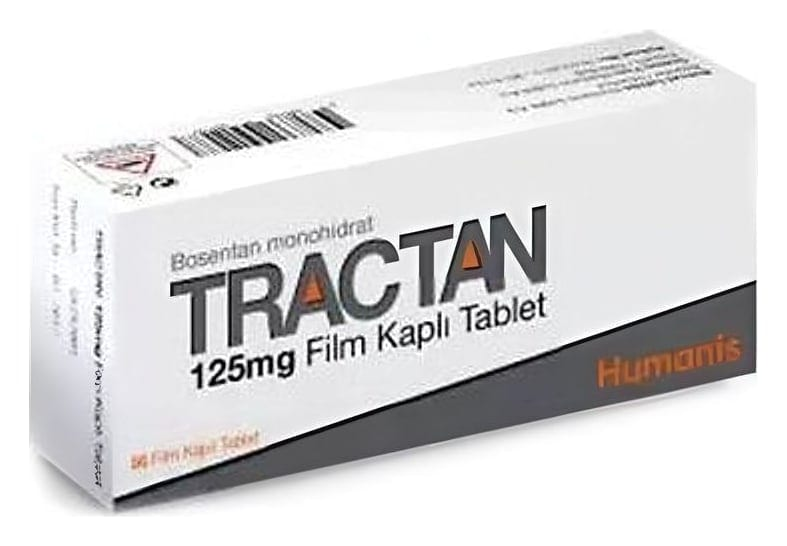

Tractan 125 mg Film Kaplı Tablet, 56 Adet

Ne için kullanılır
KT · Bölüm 1TRACTAN, 125 mg bosentan içeren tabletle r şeklinde her bir kutuda 56 ade t olarak satılır. TRACTAN 125 mg tabletle r açık pembe, oval, bikonveks, film kaplı tabletlerdir.
TRACTAN tabletle r ka n damarlarının daralmasına sebe p olan endotelin-l adlı hormonu bloke ede n bosentan içerir. TRACTAN bu sebeple kan da marlanın genişlemesine sebe p olur ve "endotelin reseptör a nt agonisti" de nile n ilaç g rubuna dahildir.
TRACTAN aşağıdaki hastalıkların teda visinde kullanılır: ● Pulmoner arteriyel hipertansiyon (PAH): PAH, akc iğerlerde ki ka n da marlarının şiddetli daralması sonucu ka lpten akc iğerlere kan taşıyan da marlarda (pulmoner arterler) yüksek ka n basıncı ile sonuçlana n bir hastalıktır. Bu basınç akciğerlerde n ka na geçecek oksijeni azaltarak fiziksel aktiviteyi zor laştırmaktadır. TRACTAN, pulmoner arterleri genişleterek ka lbin bu da marlara kan pompalamasını kolaylaştırır. Bu da k an basıncını düşürür ve belir til eri hafifletir .
TRACTAN pulmoner arteriyel hipertansiyonlu (PAH) sınıf II, III ve IV ha staların teda visinde egzersiz kapa sit esini (fiziksel a ktivite yapabilme yeteneği) ve s emptomları iyileştirmede kullanılır.
TRACTAN’ın kullanılabildiği PAH tipleri: ● Primer ( tanımlanmış bir s ebe p yok ya d a a ile sel) ● Sklerodermanın sebe p olduğu (sistemik skleroz olarak da tanımlana n cilt ve diğer or ganları de stekleyen bağ dokusunun anormal büyümesi şeklindeki hastalık) ● Kalp ve akciğerlerde anormal kan akımına sebe p olan doğumsal şantlı (anormal geçiş) ka lp kusurlarının sebe p olduğu
Dijital ülserler: (el ve ayak parmaklarındaki yaralar) sklerodermalı yetişkin ha stalarda görülen dijital ülserlerin teda visinde kullanılmaktadır. TRACTAN el ve ayak parmaklarında çıkan yeni dijital ülserlerin sayısını azaltmaktadır.